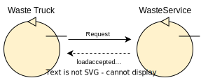

Introduction
Requirements
Requirement analysis
Meaning of nouns and verbs
WasteService : software that allows a Waste truck to deposit it's load in the proper container.DDR Robot : Differential Drive Robot, that can be virtual or real. Capable of moving in the environment by executing simple move commands. It must be capable of moving objects as a transpot trolley with a squared form of fixed side length equal toRD .
The customer provides the software that further defines it's capabilities:it.unibo.basicRobot22 ;Service Area : a rectuangular area that includes an INDOOR port, a PlasticBox container and a GlassBox container. It's free from any internal obstacles;INDOOR : a port to the Service Area. It's formal position and usage will be later defined;PlasticBox : a container devoted to store objects made of plastic up to a limited capacity;GlassBox : a container devoted to store objects made of glass up to a limited capacity;HOME : the initial and default location of the Robot. It is found inside the Service Area in a formal location later defined;Waste truck : a transport vehicle that brings waste material to the INDOOR port;Driver : the driver of the Waste truck which uses a smart device to interact with the WasteService;ServiceManager : a human being that supervises the state of the WasteService;WasteServiceStatusGUI : user interactive component used by the ServiceManager to observe the status of the WasteService:- the current state of the transport trolley and it position in the room;
- the current weigth of the material stored in the two waste-containers;
- the current state of the Led.
Sonar : a device that measures a distance. Is connected to the RaspberryPi.
The customer provides us the codeSonarAlone.c : this C program continuously reads the distance from a phisical sonar connected to a Raspberry and print it to the standard output;Led : a light that can be switched on or off. Is connected to the RaspberryPi;
The customer provides us the codeLed25GpioTurnOn.sh andLed25GpioTurnOff.sh : these bash scripts simply turn on and off the led connected to a Raspberry;RaspberryPi : an hardware device that can interact with components of the WasteService;Loadaccept : the reply sent by the WasteService if the load can be accepted;Loadarejected : the reply sent by the WasteService if the load can't be accepted;MAXPB : fixed max kg of material which can be stored in the PlasticBox;MAXGB : fixed max kg of material which can be stored in the GlassBox;DLIMIT : fixed distance compared to the distance measured by the sonar, if the latter is less than this value the Robot must be stopped;- Hardcoded: witten directly inside the code;
- Configuration file: saved in an external file;
- altre idee
|
|
These constants can be defined in different ways:
|
Start the robot : start the robot from the position it is currently at. This operation is always managed by the WasteService;Stop the robot : stops the robot in the position it is currently at. This operation is always managed by the WasteService;Pick up load : the robot takes the waste load from the Waste Truck;Deposit load : the robot unloads the waste in the appropriate container;Send store request :
Use Cases

The
- Approach INDOOR:
Definition of a formal model of the requirements
